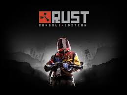
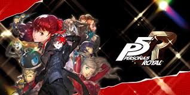
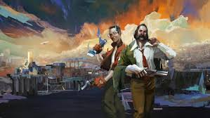

ELden Ring

Elden Ring (エルデンリング Eruden Ringu) es un videojuego de rol de acción desarrollado por FromSoftware y publicado por Bandai Namco Entertainment. El videojuego surge de una colaboración entre el director y diseñador Hidetaka Miyazaki y el novelista de fantasía George R. R. Martin.
Ver más
Black Myth: Wukong

Black Myth: Wukong (en chino simplificado: 黑神话：悟空; en chino tradicional: 黑神話：悟空; en pinyin: Hēishénhuà: Wùkōng) es un videojuego de rol de acción, desarrollado y distribuido por Game Science. Está basado en la clásica novela china del siglo XVI Viaje al Oeste, siguiendo las aventuras del mono Sun Wukong
Ver más
Balatro

El roguelike de póker. Balatro es un hipnótico y genial constructor de mazos donde podrás jugar manos ilegales de póker, descubrir comodines que alterarán tus partidas y activar combos impresionantes que dispararán tu adrenalina.
Ver más
Rust

El único objetivo en Rust es sobrevivir. Todo quiere que mueras: la vida salvaje de la isla, otros habitantes, el medio ambiente y otros supervivientes. Haz lo que sea necesario para durar una noche más..
Ver más
The Last of Us II

Cinco años después de su peligroso viaje por un Estados Unidos postapocalíptico, Ellie y Joel se han asentado en Jackson, Wyoming. La vida en una próspera comunidad de supervivientes les ha permitido disfrutar de paz y estabilidad, a pesar de la amenaza constante de los infectados y de otros supervivientes más desesperados.
Sin embargo, tras un hecho violento que altera esa paz, Ellie se embarca en un viaje implacable en busca de justicia. A medida que va dando caza a los culpables uno a uno, deberá afrontar las devastadoras consecuencias, tanto físicas como emocionales, de sus acciones.
Ver más
Persona 5 Royal

Como expansión del lanzamiento original de 2017, Persona 5 Royal llega repleto de nuevos personajes, confidentes, historia y ubicaciones, además de una nueva mecánica de gancho para acceder furtivamente a áreas nunca vistas.
Explora Tokio, desbloquea nuevos Personas (demonios de las mazmorras de ensueño que lucharán por ti), personaliza tu Guarida de los Ladrones, descubre los nuevos añadidos: un arco argumental, cinemáticas, finales alternativos y más.
Persona 5 Royal mantiene su distintivo estilo visual y el compositor Shoji Meguro, nominado a varios premios, vuelve con una banda sonora totalmente nueva.
Ver más
Disco Elysium

Disco Elysium es un revolucionario juego de rol de mundo abierto. Encarna a un detective con un conjunto único de habilidades a su disposición y un barrio entero que recorrer. Interroga personajes memorables, desentraña casos o acepta sobornos. Sé un héroe o un ser humano desastroso.
Ver más
Hades

Desafía al dios de los muertos mientras atacas y atacas desde el inframundo en este pícaro rastreador de mazmorras de los creadores de Bastion, Transistor y Pyre.
Ver más